| 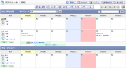 |
スケジュール 週間
週間表示でスケジュールを表示します。 |
|---|---|
| 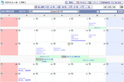 |
スケジュール 月間
月間表示でスケジュールを表示します。 |
| 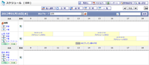 |
スケジュール 日間
日間表示でスケジュールを表示します。 |
| 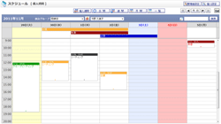 |
スケジュール 個人週間
個人週間スケジュールを表示します。 |
| 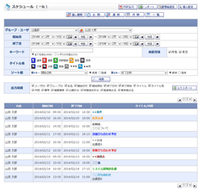 |
スケジュール一覧
詳細な検索条件を入力しスケジュールの一覧を表示します。 |
 |
スケジュール 新規登録
・
変更（出欠確認しない）
・
変更（出欠確認依頼側）
・
変更（出欠確認回答側）
・
確認
グループスケジュール 新規登録 ・ 変更 ・ 確認 スケジュールの登録を行います。 |
| 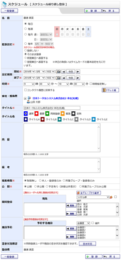 |
スケジュール 繰り返し登録
・
確認
・
変更
・
確認
・
削除
グループスケジュール 繰り返し登録 ・ 確認 ・ 変更 ・ 確認 ・ 削除 スケジュールの繰り返し登録を行います。 |
 |
管理者設定
スケジュール機能に関する管理者設定を行います。 |
 |
スケジュール 基本設定
スケジュール機能に関する基本設定を行います。 |
| 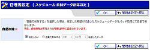 |
自動データ削除設定
指定期間が経過した古いスケジュールデータを自動で削除する設定を行います。 |
| 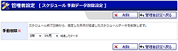 |
手動データ削除設定
手動で、スケジュール終了日時から指定した年月が経過したスケジュールデータを削除します。 |
 |
スケジュールインポート
・
確認（管理者設定）
ユーザ単位、または、グループ単位のスケジュールのインポートを行います。 |
 |
スケジュール初期値設定（管理者設定）
スケジュール機能に関する初期値設定を行います。 |
 |
ショートメール通知設定（管理者設定）
ショートメールの通知設定を行います。 |
 |
個人設定
スケジュール機能に関する個人設定を行います。 |
 |
スケジュール初期値設定
ユーザごとのスケジュール機能に関する初期値設定を行います。 |
| 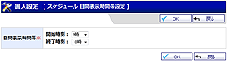 |
日間表示時間帯設定
スケジュール日間で基本表示を行う時間帯の設定を行います。 |
| 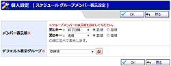 |
グループメンバー表示設定
グループメンバーの並び順の設定、デフォルト表示グループの設定を行います。 |
| 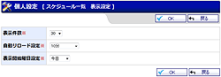 |
スケジュール一覧表示設定
スケジュール一覧の表示件数の設定を行います。 |
 |
ショートメール通知設定
スケジュール登録時のショートメール通知の設定を行います。 |
 |
スケジュールインポート
・
確認
ユーザ単位のスケジュールのインポートを行います。 |
| 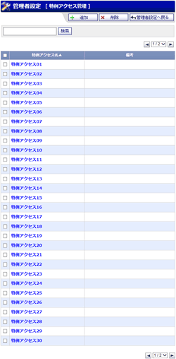 |
特例アクセス管理
特例アクセスの一覧が表示されます。 |
 |
特例アクセス 登録
・
登録確認
・
編集
・
編集確認
特例アクセスを追加・編集します。 |